library(tidyverse)
library(readr)
library(ggplot2)
knitr::opts_chunk$set(echo = TRUE, warning=FALSE, message=FALSE)Final Project Assignment: Nanci Kopecky
final_Project_assignment
Boston 311 Service Requests for 2023
Introduction
The topic is Boston city services. This project will examine Boston’s non-emergency service requests in the data set, 311 Service Requests. Exploring this data has the potential to offer insight to city planners to be more efficient and better meet citizens’ expectations. Boston collects 311 Service Requests data using technology, a system called Boston 311. The data is posted on the website Analyze Boston, data.boston.gov. What is being looked at in this project is how Boston 311 can benefit the greater good through effective city planning.
Background
In response to cities facing increasing demands and changing expectations,Boston 311 was launched in 2015 by Mayor Walsh. It is a system where city employees and residents can submit requests through an app, phone call, or online. Boston 311 is continuely updated and highly utilized. Mayor Wu recently announced that requests can now be made in 11 languages. This technology is proven to engage citizens with over 100,000 requests so far for 2023!
Data Set Introduction
To date, 311 Service Requests has 104,934 requests, where as, in April there were 79,930. This data is read in with a URL so requests are updated every time the code is run. Each row represents a request; there today there are 104,934 rows. There are 29 columns. Each column contains detailed information about the request that includes the description, time, date, location, the department/domain responsible, and submisstion source. Requests are generally about maintenance, repair, cleaning, and policy.
Data Set Description
The numerical variables are case_enquiry_id, fire_district and police_district, and services_district, but have no numerical meaning because they are identifying/naming information. The character or categorical variables provide information on: case status with open, target, and close dates; descriptions including the title, reason, and type; the department subject; location information with the address, fire, city council and police districts, and latitude and longitude coordinates; and source which detial who and how the submission was made.
Boston311 <- read.csv(url("https://data.boston.gov/dataset/8048697b-ad64-4bfc-b090-ee00169f2323/resource/e6013a93-1321-4f2a-bf91-8d8a02f1e62f/download/tmpo8qm0oqd.csv"))
Bos311 <- as.data.frame.matrix(Boston311)
head(Bos311)dim(Bos311)[1] 104934 29#Structure of the Data.
str(Bos311)'data.frame': 104934 obs. of 29 variables:
$ case_enquiry_id : num 1.01e+11 1.01e+11 1.01e+11 1.01e+11 1.01e+11 ...
$ open_dt : chr "2023-03-04 11:21:00" "2023-02-14 10:35:00" "2023-01-17 16:46:00" "2023-02-16 07:22:00" ...
$ target_dt : chr "2023-03-05 11:21:36" "" "2023-02-16 16:46:53" "2023-02-24 08:30:00" ...
$ closed_dt : chr "" "" "" "" ...
$ ontime : chr "OVERDUE" "ONTIME" "OVERDUE" "OVERDUE" ...
$ case_status : chr "Open" "Open" "Open" "Open" ...
$ closure_reason : chr " " " " " " " " ...
$ case_title : chr "Traffic Signal Inspection" "Park Improvement: Boston Common - BPRD" "DSP1/18Heat - Excessive Insufficient" "Ground Maintenance" ...
$ subject : chr "Transportation - Traffic Division" "Parks & Recreation Department" "Inspectional Services" "Parks & Recreation Department" ...
$ reason : chr "Signs & Signals" "Park Maintenance & Safety" "Housing" "Park Maintenance & Safety" ...
$ type : chr "Traffic Signal Inspection" "Park Improvement Requests" "Heat - Excessive Insufficient" "Ground Maintenance" ...
$ queue : chr "BTDT_Sign Repair" "PARK_Park Improvement Requests" "ISD_Housing (INTERNAL)" "ONS_General" ...
$ department : chr "BTDT" "PARK" "ISD" "ONS_" ...
$ submittedphoto : chr "" "" "" "" ...
$ closedphoto : chr "" "" "" "" ...
$ location : chr "190 Pier 4 Blvd Boston MA 02210" " " "28 Elmdale St Dorchester MA 02122" "444 Harrison Ave Roxbury MA 02118" ...
$ fire_district : int 6 NA 8 4 NA NA 7 9 3 7 ...
$ pwd_district : chr "05" " " "07" "1C" ...
$ city_council_district : int 2 NA 3 2 NA NA 7 7 1 3 ...
$ police_district : chr "C6" " " "C11" "D4" ...
$ neighborhood : chr "Boston" " " "Dorchester" "Roxbury" ...
$ neighborhood_services_district: int 5 NA 7 4 NA NA 13 13 3 7 ...
$ ward : chr "06" " " "Ward 16" "03" ...
$ precinct : chr "0601" " " "1605" "0307" ...
$ location_street_name : chr "190 Pier 4 Blvd" "" "28 Elmdale St" "444 Harrison Ave" ...
$ location_zipcode : int 2210 NA 2122 2118 NA NA 2125 2119 2108 2125 ...
$ latitude : num 42.4 42.4 42.3 42.3 42.4 ...
$ longitude : num -71.1 -71.1 -71.1 -71.1 -71.1 ...
$ source : chr "Constituent Call" "Constituent Call" "Constituent Call" "Citizens Connect App" ...#How many *reasons*?
unique(Bos311$reason) [1] "Signs & Signals" "Park Maintenance & Safety"
[3] "Housing" "Employee & General Comments"
[5] "Building" "Notification"
[7] "Needle Program" "Highway Maintenance"
[9] "Graffiti" "Enforcement & Abandoned Vehicles"
[11] "Trees" "Sanitation"
[13] "Recycling" "Street Lights"
[15] "Code Enforcement" "Street Cleaning"
[17] "Health" "Sidewalk Cover / Manhole"
[19] "Animal Issues" "Traffic Management & Engineering"
[21] "Environmental Services" "Generic Noise Disturbance"
[23] "Administrative & General Requests" "Noise Disturbance"
[25] "Abandoned Bicycle" "Weights and Measures"
[27] "Boston Bikes" "Catchbasin"
[29] "Pothole" "Operations"
[31] "Fire Hydrant" "Air Pollution Control"
[33] "Office of The Parking Clerk" "Programs"
[35] "Cemetery" "Neighborhood Services Issues"
[37] "Alert Boston" "Bridge Maintenance"
[39] "Massport" "MBTA"
[41] "Parking Complaints" "Valet"
[43] "Billing" Analysis Plan
Questions that can potentially inform city planners on efficiency are: Which departments receive the most requests? Which departments and neighborhoods have the most overdue requests? What is the most common source/what format most requests are made, i.e., phone, app, or other? Diving into this data set can help planners allocate appropriate resources and develop individualized plans for neighborhoods and departments.
Frequency and proportion tables and bar charts will be used to begin to answer these questions. The variables that will be used are subject (department), ontime, neighborhood, and source.
Descriptive Statistics
Frequencies and percentages will summarize the categorical data, subject (department), ontime, neighborhood, and source.
#Requests by Department
By_Department <- table(Bos311$subject)
cbind(By_Department, prop.table(By_Department)*100) By_Department
Animal Control 1353 1.28938190
Boston Police Department 301 0.28684697
Boston Water & Sewer Commission 442 0.42121715
Inspectional Services 6343 6.04475194
Mayor's 24 Hour Hotline 3682 3.50887224
Neighborhood Services 13 0.01238874
Parks & Recreation Department 5020 4.78395944
Property Management 797 0.75952503
Public Works Department 59499 56.70135514
Transportation - Traffic Division 27484 26.19170145#On-Time and Overdue Requests
By_Completion_Status <- table(Bos311$ontime)
cbind(By_Completion_Status, prop.table(By_Completion_Status)*100) By_Completion_Status
ONTIME 87384 83.2752
OVERDUE 17550 16.7248# Tidy Data
## Removing the rows with missing values and outliers for neighborhood and source. Chestnut Hill and Maximo Integration are outliers with only 1 submitted request each.
Bos311_Neighbor <- Bos311[!(is.na(Bos311$neighborhood) | Bos311$neighborhood==" "| Bos311$neighborhood=="" | Bos311$neighborhood=="Chestnut Hill" | Bos311$source=="Maximo Integration"), ]
unique(Bos311_Neighbor$neighborhood) [1] "Boston"
[2] "Dorchester"
[3] "Roxbury"
[4] "Downtown / Financial District"
[5] "Hyde Park"
[6] "East Boston"
[7] "Back Bay"
[8] "Jamaica Plain"
[9] "Charlestown"
[10] "Roslindale"
[11] "Beacon Hill"
[12] "Fenway / Kenmore / Audubon Circle / Longwood"
[13] "West Roxbury"
[14] "Mission Hill"
[15] "South Boston / South Boston Waterfront"
[16] "Allston / Brighton"
[17] "South End"
[18] "Greater Mattapan"
[19] "Brighton"
[20] "South Boston"
[21] "Allston"
[22] "Mattapan" unique(Bos311_Neighbor$source)[1] "Constituent Call" "Citizens Connect App" "City Worker App"
[4] "Self Service" "Employee Generated" #Request by Neighborhood
By_Neighborhood <- table(Bos311_Neighbor$neighborhood)
cbind(By_Neighborhood, prop.table(By_Neighborhood)*100) By_Neighborhood
Allston 377 0.3633210
Allston / Brighton 7139 6.8799692
Back Bay 4717 4.5458488
Beacon Hill 3193 3.0771455
Boston 3653 3.5204549
Brighton 667 0.6427986
Charlestown 3435 3.3103648
Dorchester 16056 15.4734255
Downtown / Financial District 5046 4.8629114
East Boston 8106 7.8118826
Fenway / Kenmore / Audubon Circle / Longwood 1860 1.7925119
Greater Mattapan 5328 5.1346793
Hyde Park 4406 4.2461331
Jamaica Plain 5983 5.7659134
Mattapan 267 0.2573122
Mission Hill 1856 1.7886571
Roslindale 3780 3.6428468
Roxbury 9192 8.8584783
South Boston 940 0.9058931
South Boston / South Boston Waterfront 7658 7.3801378
South End 6577 6.3383607
West Roxbury 3529 3.4009541#Requests by Source
By_Source <- table(Bos311_Neighbor$source)
cbind(By_Source, prop.table(By_Source)*100) By_Source
Citizens Connect App 48120 46.374018
City Worker App 10854 10.460174
Constituent Call 40551 39.079651
Employee Generated 1910 1.840698
Self Service 2330 2.245458Results and Analysis
# Which department recieves the most requests?
ggplot(Bos311, aes(subject)) +
geom_bar(fill ="#33CCFF")+
labs(title = "Requests by Department", x = "Department", y = "Frequency") +
coord_flip()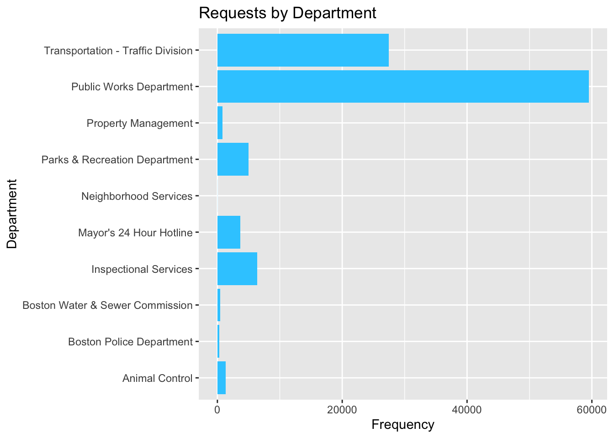
#Which departments have more overdue requests?
ggplot(Bos311, aes(subject)) +
geom_bar(aes(fill=ontime), position = "fill") +
labs(title = "On Time and Overdue Requests by Department", x = "Department", y = "Percent") +
coord_flip()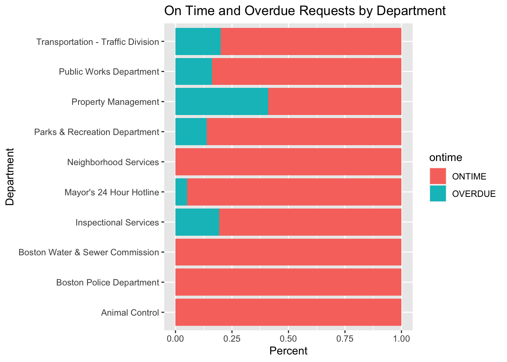
table(Bos311$subject,Bos311$ontime)
ONTIME OVERDUE
Animal Control 1353 0
Boston Police Department 301 0
Boston Water & Sewer Commission 442 0
Inspectional Services 5116 1227
Mayor's 24 Hour Hotline 3495 187
Neighborhood Services 13 0
Parks & Recreation Department 4326 694
Property Management 470 327
Public Works Department 49880 9619
Transportation - Traffic Division 21988 5496#Which neighborhoods have more overdue requests?
ggplot(Bos311_Neighbor, aes(neighborhood)) +
geom_bar(aes(fill=ontime), position = "fill") +
labs(title = "On Time and Overdue Requests by Neighborhood", x = "Neighborhood", y = "Percent") +
coord_flip()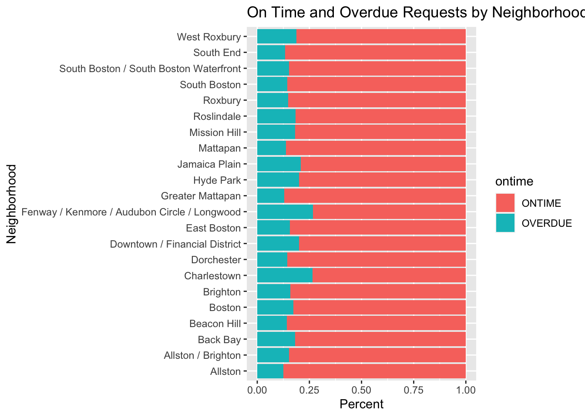
table(Bos311_Neighbor$neighborhood,Bos311_Neighbor$ontime)
ONTIME OVERDUE
Allston 330 47
Allston / Brighton 6053 1086
Back Bay 3860 857
Beacon Hill 2737 456
Boston 3018 635
Brighton 561 106
Charlestown 2525 910
Dorchester 13735 2321
Downtown / Financial District 4040 1006
East Boston 6836 1270
Fenway / Kenmore / Audubon Circle / Longwood 1364 496
Greater Mattapan 4638 690
Hyde Park 3520 886
Jamaica Plain 4730 1253
Mattapan 230 37
Mission Hill 1520 336
Roslindale 3085 695
Roxbury 7822 1370
South Boston 804 136
South Boston / South Boston Waterfront 6497 1161
South End 5702 875
West Roxbury 2865 664prop.table(table(Bos311_Neighbor$neighborhood,Bos311_Neighbor$ontime))
ONTIME OVERDUE
Allston 0.0031802631 0.0004529466
Allston / Brighton 0.0583337349 0.0104659567
Back Bay 0.0371994410 0.0082590469
Beacon Hill 0.0263769094 0.0043945454
Boston 0.0290849516 0.0061195972
Brighton 0.0054064473 0.0010215391
Charlestown 0.0243338313 0.0087698164
Dorchester 0.1323664049 0.0223678504
Downtown / Financial District 0.0389341300 0.0096949839
East Boston 0.0658796319 0.0122391943
Fenway / Kenmore / Audubon Circle / Longwood 0.0131450875 0.0047800318
Greater Mattapan 0.0446971522 0.0066496410
Hyde Park 0.0339228063 0.0085385246
Jamaica Plain 0.0455837710 0.0120753626
Mattapan 0.0022165470 0.0003565750
Mission Hill 0.0146484846 0.0032380861
Roslindale 0.0297306414 0.0066978268
Roxbury 0.0753818725 0.0132029104
South Boston 0.0077482774 0.0013106539
South Boston / South Boston Waterfront 0.0626126343 0.0111887438
South End 0.0549510914 0.0084325158
West Roxbury 0.0276104660 0.0063990748#Are *neighborhood* and *ontime* independent?
table(Bos311_Neighbor$neighborhood, Bos311_Neighbor$ontime)
ONTIME OVERDUE
Allston 330 47
Allston / Brighton 6053 1086
Back Bay 3860 857
Beacon Hill 2737 456
Boston 3018 635
Brighton 561 106
Charlestown 2525 910
Dorchester 13735 2321
Downtown / Financial District 4040 1006
East Boston 6836 1270
Fenway / Kenmore / Audubon Circle / Longwood 1364 496
Greater Mattapan 4638 690
Hyde Park 3520 886
Jamaica Plain 4730 1253
Mattapan 230 37
Mission Hill 1520 336
Roslindale 3085 695
Roxbury 7822 1370
South Boston 804 136
South Boston / South Boston Waterfront 6497 1161
South End 5702 875
West Roxbury 2865 664chisq.test(table(Bos311_Neighbor$neighborhood, Bos311_Neighbor$ontime))
Pearson's Chi-squared test
data: table(Bos311_Neighbor$neighborhood, Bos311_Neighbor$ontime)
X-squared = 795.22, df = 21, p-value < 2.2e-16# What is the most common source?
ggplot(Bos311_Neighbor, aes(source)) +
geom_bar(fill ="#33CCFF")+
labs(title = "Source of Requests", x = "Source", y = "Frequency") +
coord_flip()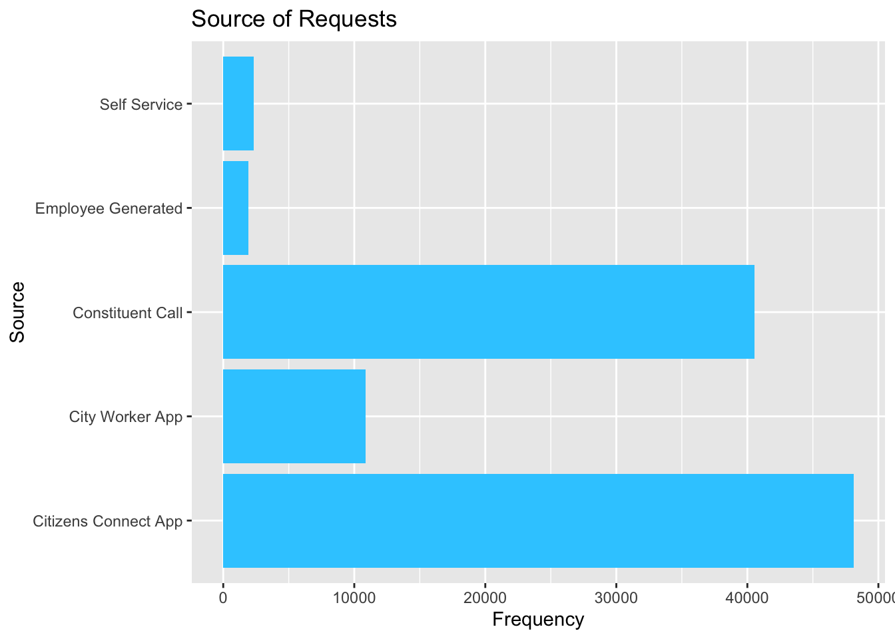
#Are *ontime* and *source* independent? A few visualizations are presented here to discuss which could best answer this question.
ggplot(Bos311_Neighbor, aes(source)) +
geom_bar(aes(fill=ontime), position = "fill") +
labs(title = "On Time by Source", x = "Source", y = "Percent") +
coord_flip()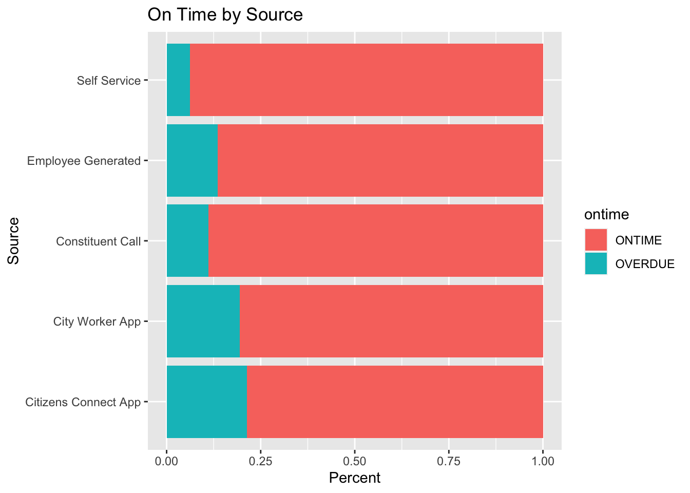
ggplot(Bos311_Neighbor, aes(ontime)) +
geom_bar(aes(fill=source), position = "fill") +
labs(title = "Source Distribution for On Time and Overdue", x = "Completion Status", y = "Percent") +
coord_flip()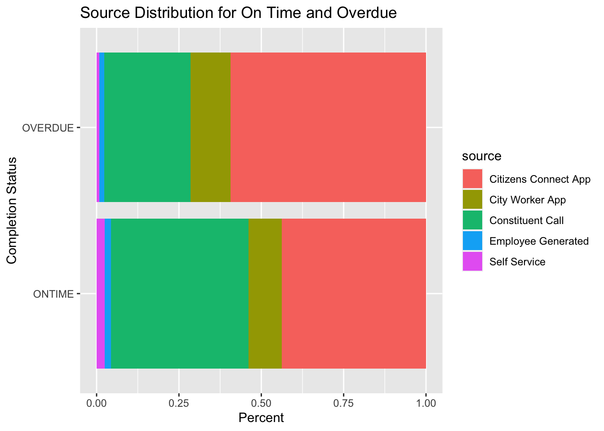
ggplot(Bos311_Neighbor, aes(ontime)) +
geom_bar(aes(fill=source), position = position_dodge()) +
labs(title = "Source Distribution for On Time and Overdue", x = "Neighborhood", y = "Percent") +
coord_flip()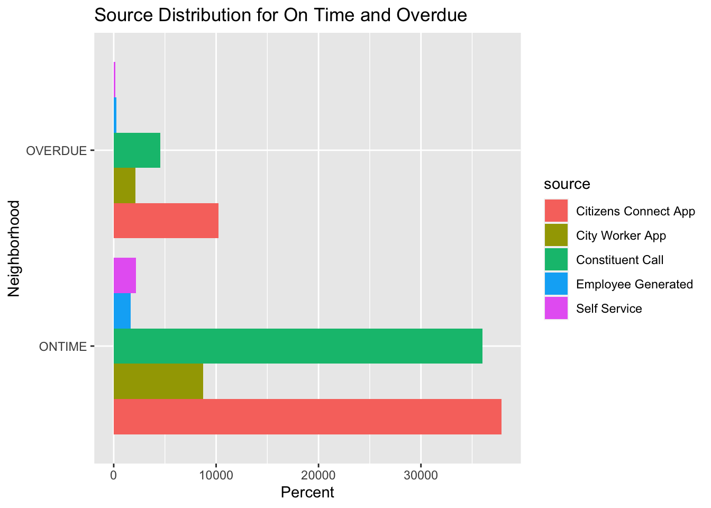
prop.table(table(Bos311_Neighbor$source,Bos311_Neighbor$ontime))
ONTIME OVERDUE
Citizens Connect App 0.364901460 0.098838722
City Worker App 0.084315521 0.020286224
Constituent Call 0.347140173 0.043656339
Employee Generated 0.015920590 0.002486388
Self Service 0.021066834 0.001387751#Are *ontime* requests and *source* independent? A chi-square test concludes no, that these variables are associated.
table(Bos311_Neighbor$ontime, Bos311_Neighbor$source)
Citizens Connect App City Worker App Constituent Call
ONTIME 37864 8749 36021
OVERDUE 10256 2105 4530
Employee Generated Self Service
ONTIME 1652 2186
OVERDUE 258 144chisq.test(table(Bos311_Neighbor$ontime, Bos311_Neighbor$source))
Pearson's Chi-squared test
data: table(Bos311_Neighbor$ontime, Bos311_Neighbor$source)
X-squared = 1886.3, df = 4, p-value < 2.2e-16# How are requests submitted in each neighborhood?
ggplot(Bos311_Neighbor, aes(neighborhood)) +
geom_bar(aes(fill = source), position = "fill") +
labs(title = "311 Service Requests for 2023", x = "Neighborhood", y = "Percent") +
coord_flip()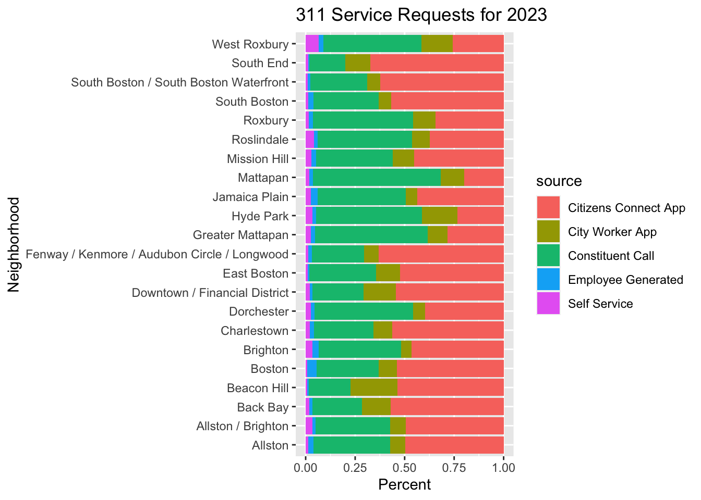
table(Bos311_Neighbor$neighborhood, Bos311_Neighbor$source)
Citizens Connect App
Allston 187
Allston / Brighton 3534
Back Bay 2692
Beacon Hill 1710
Boston 1973
Brighton 311
Charlestown 1936
Dorchester 6356
Downtown / Financial District 2747
East Boston 4244
Fenway / Kenmore / Audubon Circle / Longwood 1172
Greater Mattapan 1508
Hyde Park 1034
Jamaica Plain 2603
Mattapan 53
Mission Hill 841
Roslindale 1408
Roxbury 3175
South Boston 534
South Boston / South Boston Waterfront 4775
South End 4422
West Roxbury 905
City Worker App Constituent Call
Allston 29 146
Allston / Brighton 556 2689
Back Bay 683 1182
Beacon Hill 758 675
Boston 329 1148
Brighton 35 278
Charlestown 319 1040
Dorchester 999 7988
Downtown / Financial District 818 1312
East Boston 985 2733
Fenway / Kenmore / Audubon Circle / Longwood 140 489
Greater Mattapan 530 3033
Hyde Park 784 2358
Jamaica Plain 349 2674
Mattapan 32 172
Mission Hill 201 716
Roslindale 339 1807
Roxbury 1027 4656
South Boston 59 309
South Boston / South Boston Waterfront 493 2201
South End 833 1193
West Roxbury 556 1752
Employee Generated Self Service
Allston 10 5
Allston / Brighton 122 238
Back Bay 73 87
Beacon Hill 21 29
Boston 172 31
Brighton 21 22
Charlestown 71 69
Dorchester 302 411
Downtown / Financial District 62 107
East Boston 49 95
Fenway / Kenmore / Audubon Circle / Longwood 33 26
Greater Mattapan 122 135
Hyde Park 79 151
Jamaica Plain 193 164
Mattapan 5 5
Mission Hill 45 53
Roslindale 72 154
Roxbury 191 143
South Boston 26 12
South Boston / South Boston Waterfront 108 81
South End 47 82
West Roxbury 86 230# How are requests submitted for each department? Again, a few graphs are presented for discussion to see which better represents the question.
ggplot(Bos311, aes(subject)) +
geom_bar(aes(fill = source), position = position_dodge())+
labs(title = "Source of Requests per Department", x = "Department", y = "Frequency") +
coord_flip()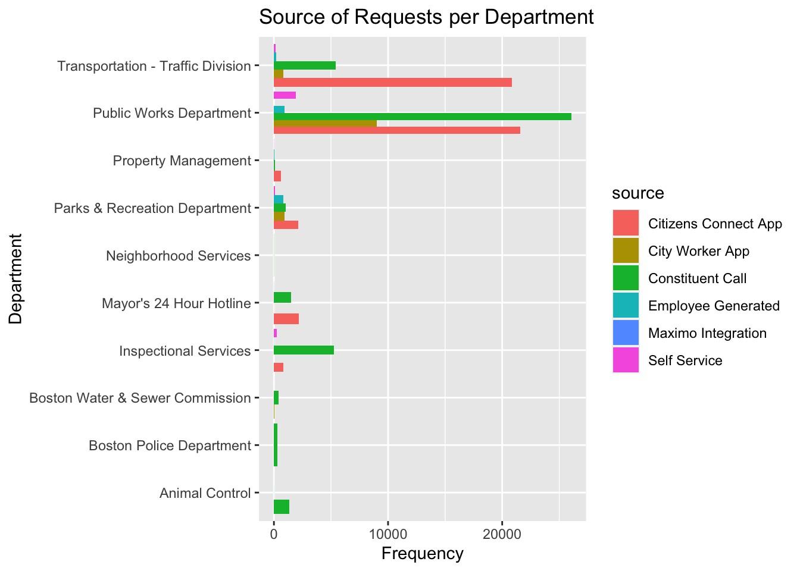
ggplot(Bos311_Neighbor, aes(subject)) +
geom_bar(aes(fill = source), position = "fill")+
labs(title = "Source of Requests per Department", x = "Department", y = "Percent") +
coord_flip()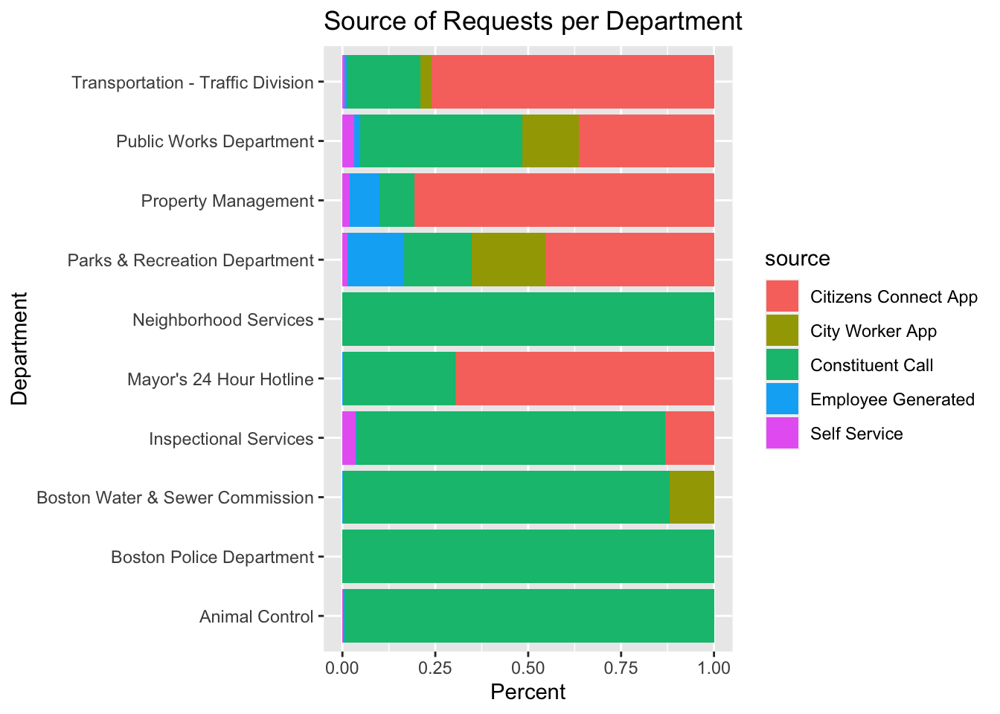
Conclusion and Discussion
I have a whole new appreciation for city management after sorting 100,000 plus non-emergency service requests. Tables and bar graphs show that Public Works receives the most requests, more than all the other departments combined. And that the Citizen Connect App is most frequent way requests are submitted. There are infinite ways to dive into the details of this data set. For instance, while Citizens Connect App is the most used way overall to report requests, constituent calls account for majority of requests for the Public Works department and the only way for the Water and Sewer, Police, and Animal Control. And knowing information like this can help planners enhance communication between the city and its residents.
Being perceptive about things like which departments and neighborhoods have more overdue requests can provide direction on improving services. For example, looking at additional variables like reason and type might shed light on why some areas have more overdue requests than others.
The chi-square test for independence for the variables ontime and neighborhood and for ontime and source. The conclusions for both tests are that these variables are associated, that they are not independent. What does that tell us? Possibly that for a service request to be completed on time might be dependent on which department or neighborhood. Is it reasonable to expect ontime to be independent of subject (department) and neighborhood? In theory, yes, but in reality, leads to more questions. What else can be contributing to these dependencies? Further study can lead to solutions so that departments have necessary resources and neighborhoods are attended to equally. Additional questions might be…
# What are the *reasons* for each *neighborhood*?
ggplot(Bos311_Neighbor, aes(neighborhood)) +
geom_bar(aes(fill=reason), position = "fill") +
labs(title = "Reason for Requests by Neighborhood", x = "Neighborhood", y = "Percent") +
coord_flip()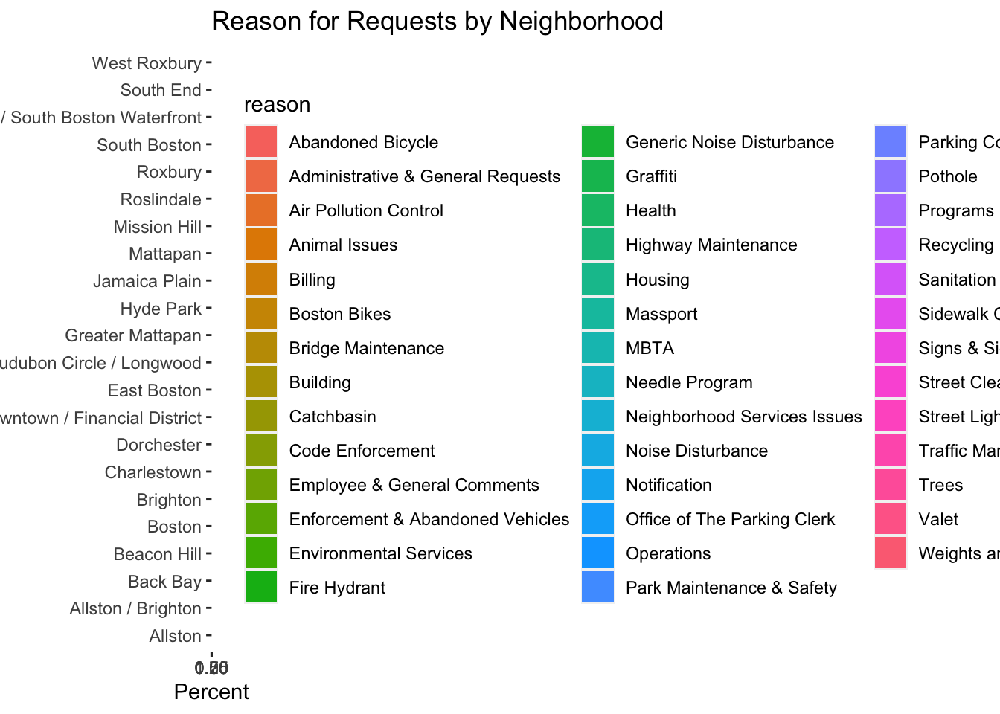
# What *reasons* are more likely to be *ontime*?
ggplot(Bos311_Neighbor, aes(ontime)) +
geom_bar(aes(fill=reason), position = position_dodge()) +
labs(title = "Reason by Completion", x = "Request Completion", y = "Percent") +
coord_flip()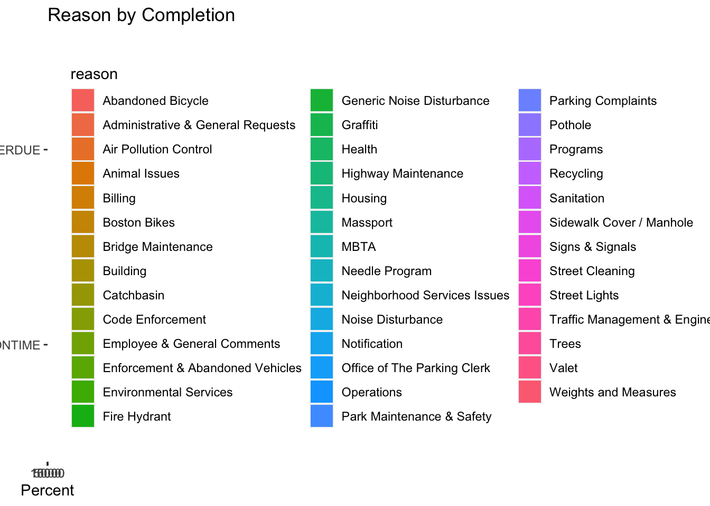
Bibliography
Center for Public Impact (2016, April 4) “Accessing Boston’s non-emergency services via Bos:311” URL https://www.centreforpublicimpact.org/case-study/updating-311-us-municipal-services
City Wide Analytics Team (2023, May 15) “Analyze Boston” URL https://data.boston.gov/
City Wide Analytics Team (2023, May 15) “311 Service-2023” URL https://data.boston.gov/dataset/8048697b-ad64-4bfc-b090-ee00169f2323/resource/e6013a93-1321-4f2 a-bf91-8d8a02f1e62f/download/tmp7tg4exd3.csv
Posit team (2022). RStudio: Integrated Development Environment for R. Posit Software, PBC, Boston, MA. URL http://www.posit.co/.
R Core Team (2022). R: A language and environment for statistical computing. R Foundation for Statistical Computing, Vienna, Austria. URL https://www.R-project.org/.